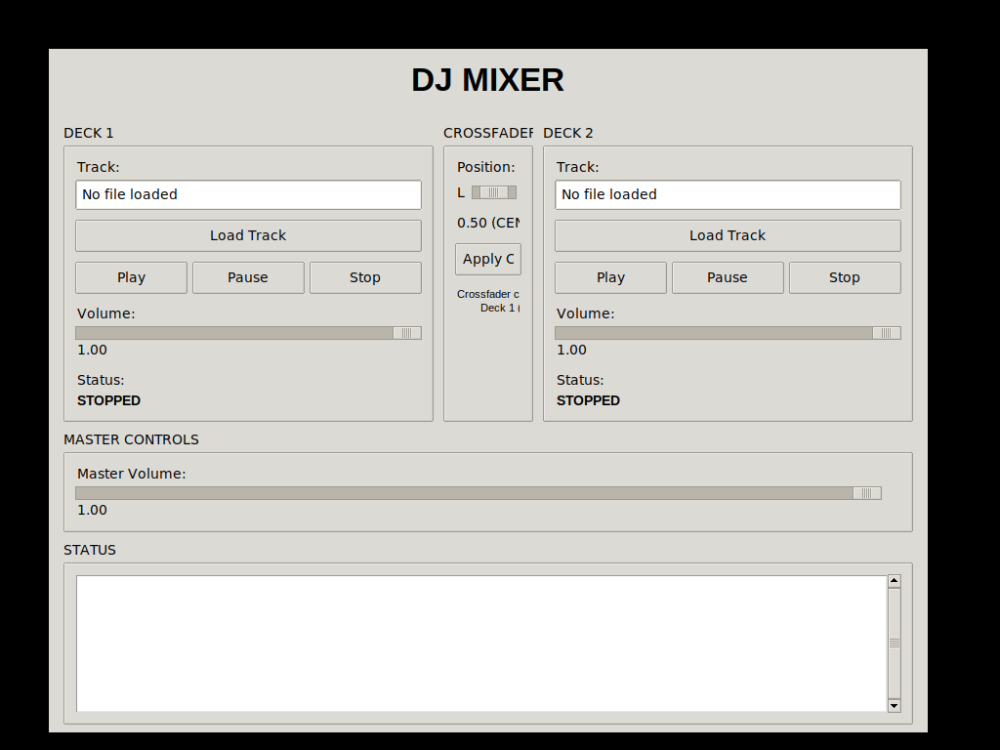

DJ Mixer GUI - Graphical User Interface
Features Implemented:
- Dual Deck Controls - Load and control two audio tracks independently
- Crossfader - Smooth transitions between left and right decks
- Volume Controls - Individual track volumes and master volume
- Playback Controls - Play, pause, stop buttons for each deck
- File Browser - Easy track loading with file dialog
- Real-time Status - Live updates of playing status and volume levels
- Professional Layout - Intuitive DJ mixer interface design
Screenshot of the GUI Application:

How to Use:
- Click "Initialize Mixer" to start the audio system
- Use "Load Track" buttons to load audio files into Deck 1 and Deck 2
- Control playback with Play/Pause/Stop buttons
- Adjust individual deck volumes with the sliders
- Use the crossfader to balance between the two decks
- Click "Apply Crossfader" to apply the crossfade effect
- Monitor status and track information in the status panel